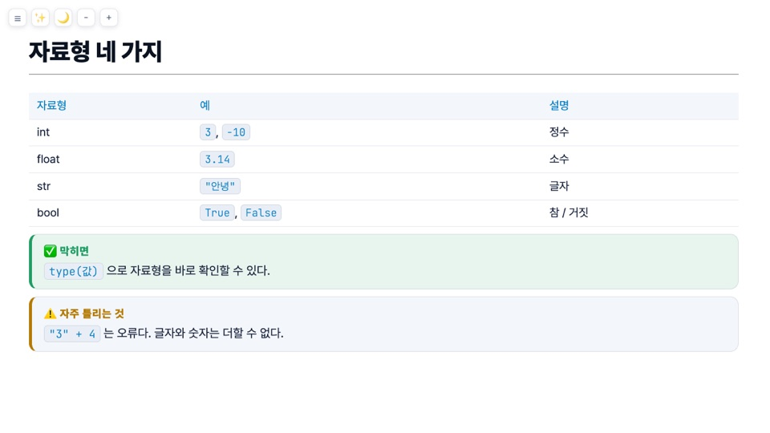
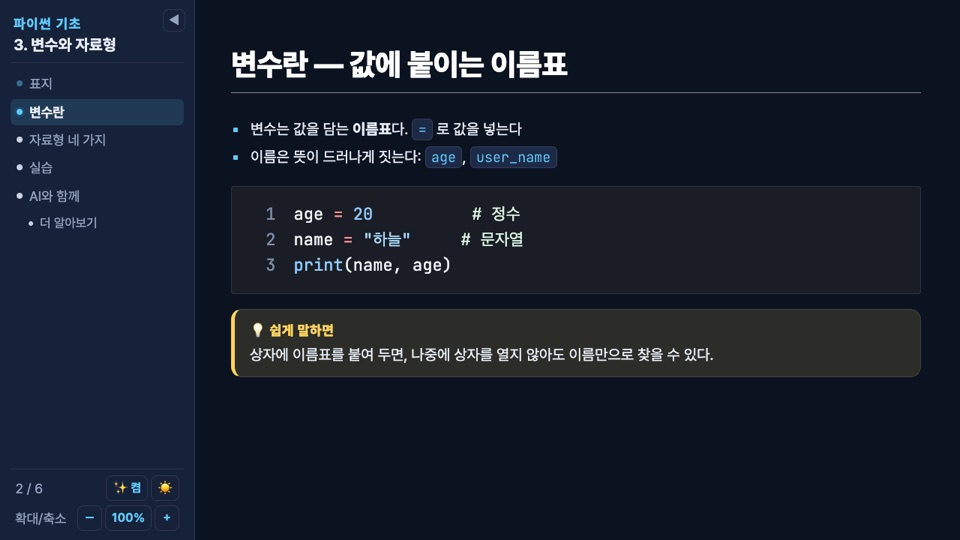
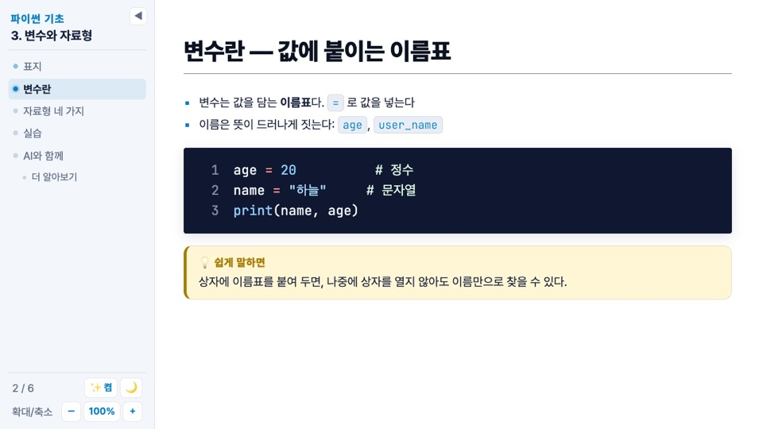
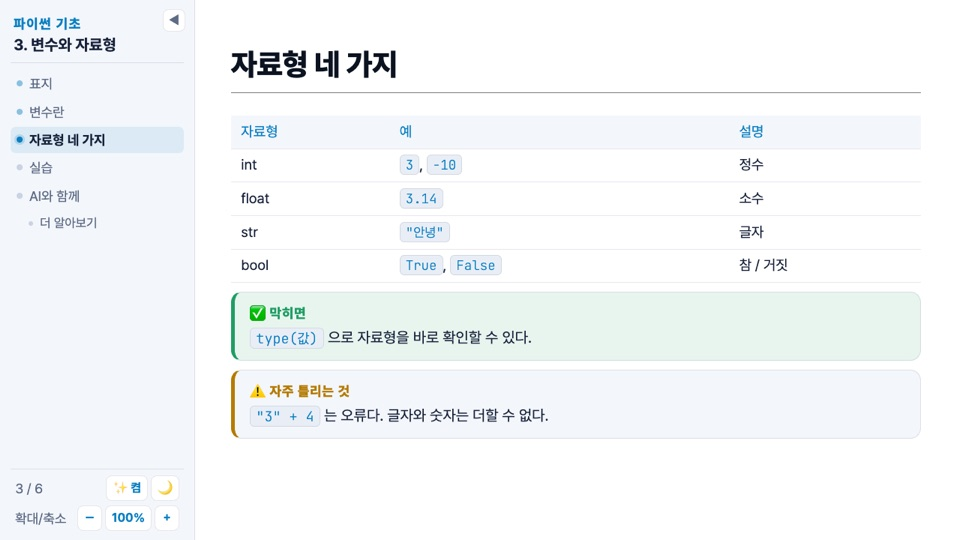
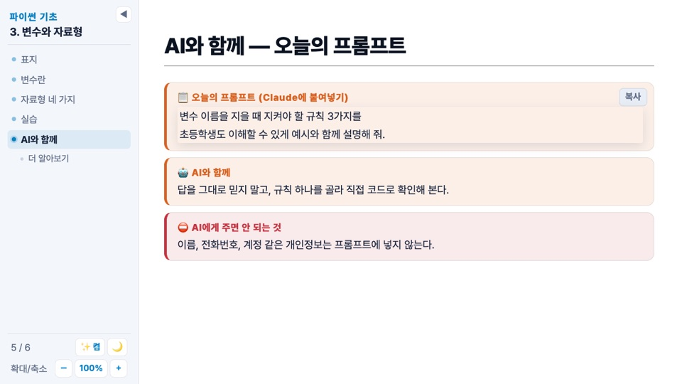
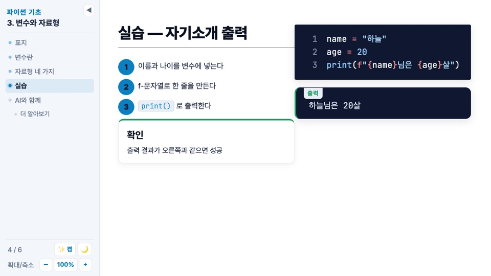
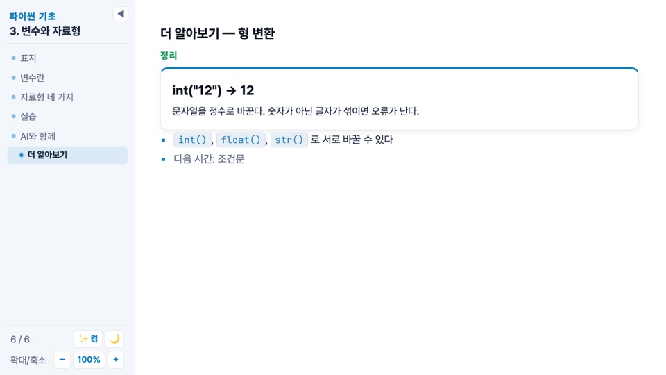

hossam 테마 강의용
코딩 기초 강의용 라이트 테마. 흰 바탕, 왼쪽에 목차 사이드바가 붙고, 콜아웃·프롬프트·출력 상자로 수업 흐름을 만든다.

시작하기
프런트매터에 theme: hossam을 적는다. title은 · (가운뎃점 양옆 공백)를 기준으로 앞은 과정 이름, 뒤는 단원 이름으로 사이드바에 올라간다. 첫 슬라이드는 layout: cover로 가운데 정렬한다.
---
theme: hossam
title: 파이썬 기초 · 3. 변수와 자료형
layout: cover
---
# 변수와 자료형
값에 이름을 붙여 두고 다시 쓰는 방법
<p class="sub">파이썬 기초 과정 · 3강</p>사이드바와 조작
목차는 슬라이드마다 첫 제목을 모아 만든다. 1쪽은 "표지"로 표시되고, ### 제목으로 시작하는 슬라이드는 한 단계 들여쓴다. 제목에서 — 뒤의 부제와 맨 앞 이모지는 목차에서 뗀다. 항목을 클릭하면 그 쪽으로 이동한다.
| 키 | 동작 |
|---|---|
| → ← Space | 다음·이전. 슬라이드가 창보다 길면 먼저 스크롤하고, 끝에 닿으면 넘어간다 |
| s | 사이드바 접기·펼치기(◀ / ☰ 버튼). 오른쪽 가장자리를 끌면 폭 조절, 더블클릭이면 기본 폭 |
| a | 애니메이션 켬·끔. 끄면 클릭 단계(v-click)가 전부 보이고 화살표가 슬라이드 단위로 움직인다 |
| d | 밝은·어두운 테마 전환(🌙 / ☀️ 버튼) |
| + - 0 | 본문 확대·축소·원래 크기. 사이드바는 그대로 |
폭·접힘·애니메이션·테마·배율은 브라우저에 기억된다. 발표 화면에서는 글자 크기를 고정하고 창 폭에 맞춰 줄바꿈하는 "웹페이지식" 배치라, 내용이 길면 슬라이드 안에서 스크롤한다. 발표자 모드·개요·인쇄 화면은 Slidev 기본 배치다.


글쓰기
#큰 제목,##밑줄 있는 슬라이드 제목,###소제목(목차에서 하위 항목).- 목록 글머리와 링크는 파랑, 인라인 코드(백틱 하나)는 연한 상자,
**굵게**는 본문색 그대로 굵게. - 코드 블록은 흰 바탕 위의 어두운 상자. 줄 번호가 기본으로 켜져 있고(
lineNumbers: true), 주석은 설명이라 밝은 초록으로 보인다. 글꼴은 JetBrains Mono. - 표는 머리글이 파란 글씨에 연한 바탕. 레이아웃은 Slidev 기본 레이아웃(
default,cover,two-cols,center,section,image-right…)을 그대로 쓴다.
## 변수란 — 값에 붙이는 이름표
- 변수는 값을 담는 **이름표**다. `=` 로 값을 넣는다
- 이름은 뜻이 드러나게 짓는다: `age`, `user_name`
```python
age = 20 # 정수
name = "하늘" # 문자열
print(name, age)
```
---
layout: two-cols
---
## 실습 — 자기소개 출력
왼쪽 칸…
::right::
오른쪽 칸…컴포넌트
Callout — 콜아웃 상자
| kind | 머리말 | 색 |
|---|---|---|
eli5(기본) | 💡 쉽게 말하면 | 노랑 |
real | 🧭 현업에서는 | 파랑 |
tip | ✅ 막히면 | 초록 |
warn | ⚠️ 주의 | 주황 |
danger | ⛔ AI에게 주면 안 되는 것 | 빨강 |
ai | 🤖 AI와 함께 | 주황 |
title로 머리말을 바꿀 수 있다. 안에 마크다운(인라인 코드·굵게)을 쓰려면 여는 태그와 닫는 태그를 빈 줄로 띄운다.
<Callout kind="eli5">
상자에 이름표를 붙여 두면, 나중에 상자를 열지 않아도 이름만으로 찾을 수 있다.
</Callout>
<Callout kind="warn" title="자주 틀리는 것">
`"3" + 4` 는 오류다. 글자와 숫자는 더할 수 없다.
</Callout>
Prompt · Output — 프롬프트와 출력
Prompt는 "오늘의 프롬프트" 상자다. 안에 백틱 네 개의 text 코드 펜스로 프롬프트를 넣으면 줄바꿈이 보존되고, 오른쪽 위 복사 버튼이 그 글을 클립보드에 넣는다. Output은 프로그램 출력 상자로, label(기본 "출력")을 바꿀 수 있다.
<Prompt>
````text
변수 이름을 지을 때 지켜야 할 규칙 3가지를
초등학생도 이해할 수 있게 예시와 함께 설명해 줘.
````
</Prompt>
```python
print(f"{name}님은 {age}살")
```
<Output>
하늘님은 20살
</Output>
<Output label="오류">
TypeError: can only concatenate str (not "int") to str
</Output>
Steps — 번호 동그라미 단계
<li>를 나열하면 번호 동그라미가 붙는다. color는 py(파랑, 기본) · ai(주황) · ok(초록).
<Steps color="py">
<li>이름과 나이를 변수에 넣는다</li>
<li>f-문자열로 한 줄을 만든다</li>
<li><code>print()</code> 로 출력한다</li>
</Steps>
클래스
| 클래스 | 뜻 |
|---|---|
.card | 흰 카드. .py .ai .ok를 함께 주면 윗선 색(파랑·주황·초록). 안에 <h3>와 <p> |
.kicker | 작은 대문자 라벨(파랑). .ai 주황, .lab 초록 |
.muted | 회색 글 |
.small | 작은 글 |
.sub | 표지의 부제(회색, 1.3rem) |
### 더 알아보기 — 형 변환
<span class="kicker lab">정리</span>
<div class="card py">
<h3>int("12") → 12</h3>
<p>문자열을 정수로 바꾼다. 숫자가 아닌 글자가 섞이면 오류가 난다.</p>
</div>
- <span class="muted">다음 시간: 조건문</span>
### 슬라이드(목차에서 들여쓰기) · kicker lab · card py전체 예제
hossam-example.md — 위 코드가 전부 들어 있는 6장짜리 덱. 내려받아 우클릭 → Open with Slidev.